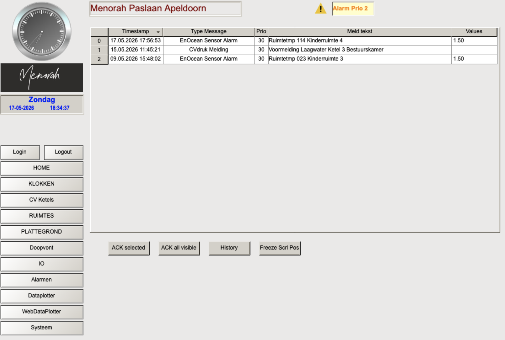

Het Alarmen scherm toont alle actieve en historische alarmen van de installatie. Bij een actief alarm verschijnt rechtsboven in het portaal een oranje "Alarm Prio 2" melding.
⚠ Actieve alarmen — stand mei 2026
| Datum | Type | Melding | Actie |
|---|---|---|---|
| 15-05-2026 11:45 | CVdruk Melding | Voormelding Laagwater Ketel 3 Bestuurskamer (0.8 bar) | CV systeem bijvullen tot 1.5 bar |
| 13-05-2026 21:35 | EnOcean Sensor Alarm | Ruimtetemp 208 Kinderruimte 5 — geen verbinding | Sensor controleren (batterij / bereik) |
| 09-05-2026 15:48 | EnOcean Sensor Alarm | Ruimtetemp 023 Kinderruimte 3 — geen verbinding | Sensor controleren (batterij / bereik) |
⚠ E-mail notificaties werken momenteel niet — alarmen worden niet automatisch doorgemeld. Zie bekende beperkingen #005.
Het Alarmen scherm

📷 screenshots/alarmen_overzicht.png — nog toe te voegenHet alarmen scherm toont per alarm de volgende informatie:
| Kolom | Betekenis |
|---|---|
| Timestamp | Datum en tijdstip waarop het alarm is ontstaan |
| Type Message | Categorie van het alarm (CVdruk Melding, EnOcean Sensor Alarm, etc.) |
| Prio | Prioriteit — hoe lager het getal, hoe hoger de prioriteit. Prio 30 = informatief alarm |
| Meld tekst | Omschrijving van het alarm |
| Values | Bijbehorende meetwaarde op het moment van het alarm |
Knoppen onderaan
| Knop | Functie |
|---|---|
| ACK selected | Bevestig het geselecteerde alarm — alarm verdwijnt uit de actieve lijst |
| ACK all visible | Bevestig alle zichtbare alarmen tegelijk |
| History | Toon het historisch alarm overzicht — alle alarmen inclusief al bevestigde |
| Freeze Scrl Pos | Bevries de scrollpositie — handig als er nieuwe alarmen binnenkomen tijdens het lezen |
Alarm typen en betekenis
| Alarm type | Oorzaak | Actie |
|---|---|---|
| EnOcean Sensor Alarm | Draadloze ruimtesensor heeft geen verbinding meer. Batterij leeg of buiten bereik. | Sensor controleren in de ruimte. Batterij vervangen (AA of AAA). Na herstel alarm bevestigen via ACK. |
| CVdruk Melding (Voormelding) | Waterdruk in CV systeem onder 0.9 bar gedaald. | CV systeem bijvullen tot 1.5 bar. Contact opnemen met technische dienst of Van Niel. |
| CVdruk Alarm | Waterdruk kritisch laag — onder 0.6 bar. Ketel kan uitvallen. | Direct CV systeem bijvullen. Als druk niet stijgt: lekkage controleren. Van Niel inschakelen. |
| Storing Ketel | Ketel meldt een storing via het digitale storing contact. | Ketel zelf inspecteren. Storingsmelding op het ketelfront aflezen. Van Niel inschakelen. |
Alarm e-mail doormelding
Het Systeem scherm toont "Failed sending network data". Alarmen worden daardoor niet automatisch per e-mail doorgemeld. Controleer het Alarmen scherm regelmatig handmatig totdat dit probleem is opgelost.
De alarm doormelding is configureerbaar via Systeem → Alarm Instellingen. Hier kunnen gebruikers worden aangemaakt met hun naam, e-mailadres en mobiel nummer. Per gebruiker kun je aangeven voor welke alarmgroepen ze meldingen ontvangen:
| Alarmgroep | Beschrijving |
|---|---|
| AlPrio1 | Hoogste prioriteit alarmen — momenteel niet in gebruik |
| AlPrio2 | Prio 2 alarmen — EnOcean sensor uitval, CV druk meldingen |
| WatchDog | Dagelijkse hartslag — bevestigt dat de PLC nog communiceert (dagelijks om 12:00) |
Een beheerder toevoegen aan alarm doormelding
- Ga naar Systeem → Alarm Instellingen (admin login vereist)
- Klik op een lege regel in de Users lijst links
- Vul rechts de Naam, Email en optioneel Mobiel in
- Vink de gewenste alarmgroepen aan — minimaal AlPrio2 voor praktische meldingen
- Herstel eerst de e-mail infrastructuur (zie verbeteringen #005) voordat doormelding werkt
WatchDog functie
De WatchDog is een automatisch hartslag signaal dat de PLC dagelijks om 12:00 uur verstuurt. Als dit signaal uitblijft, weet de ontvanger dat de PLC niet meer communiceert — bijvoorbeeld door een stroomstoring, netwerkverstoring of hardwarefout.
De WatchDog status is zichtbaar via Systeem → Alarm Instellingen rechtsboven. Een oranje puls-uitgang knop betekent dat de WatchDog actief is. Momenteel ontvangt alleen Van Niel de WatchDog melding.